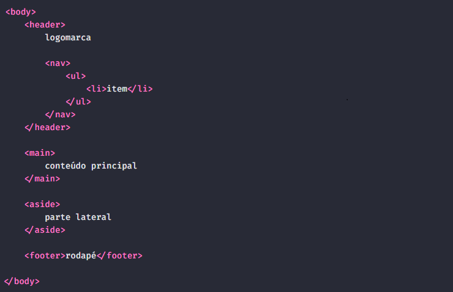

Além de trabalhar com textos e links no HTML, temos que sempre pensar na estrutura que colocamos no HTML, mas conforme formos crescendo no nosso entendimento, melhor vai sendo nossa estrutura.
Podemos entender algumas estruturas comuns do HTML, por isso vamos falar sobre essas seç~eos comuns que temos entre documentos, mas atenção que nem todas as páginas vão ter todas essas seções.
<header>:O cabeçalho do nosso site, o local onde geralmente fica a logo e o menu.
<nav>:A navegação do site vai oferecer links para seções do site, o nosso menu. costuma ficar dentro da header, porém pode ficar em outros lugares, como em uma parte lateral ou na parte de baixo.
<main>:A parte do site aonde vai o conteúdo principal, no caso de um blog, teremos vários artigos, vários posts.
<aside>:O conteúdo relacionado é algo que seja relacionado levemente ao nosso conteúdo principal, porém não tanto para ficar lá.
<footer>:Onde ficam as informações da parte de baixo da página.
Exemplo básico de como ficaria um HTML semântico:
